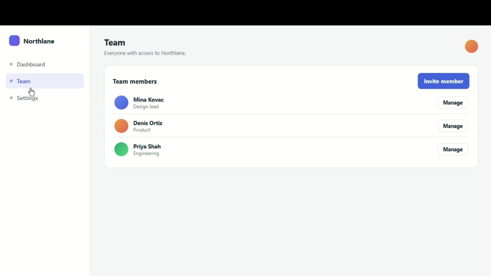

Zinra
Studio

Rec
00:14
Keep this tab open while you use the page. Stopping opens the timeline so you can place zooms, speed ramps, and cuts.
Studio

00:14
Keep this tab open while you use the page. Stopping opens the timeline so you can place zooms, speed ramps, and cuts.